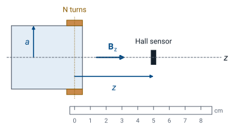

L32 - Magnetostatics Lab#
Magnetostatics Lab
Today you compute the magnetic fields of Module 3 in Python, then wind a coil and measure its field.
Lesson 32 · Module 3: Magnetostatics · Maj Ellis · Dr. Neil Rogers
Learning Objectives
- I can apply the Biot-Savart law to simple magnetostatic systems to find the magnetic field at an observation point.
- I can articulate the meaning of both the integral form and point form of Gauss's Law for magnetism.
- I can use Ampere's Law to calculate the magnetic field at an observation point for simple magnetostatic systems.
- I can apply the magnetic field boundary conditions to calculate magnetic fields on both sides of a material boundary.
Lessons 28 through 30 found magnetic fields with pencil and paper, one symmetric geometry at a time. In Part A of this lab you hand the Biot-Savart law to a computer, build the fields of a wire, a loop, a pair of loops, and a solenoid by adding up short pieces of current, and check each against the result you derived. You also test Gauss’s law for magnetism and Ampere’s law on a grid. In Part B you wind a coil, measure the field on its axis with a Hall sensor, and compare the measurement with Part A. You work in a team of two or three and turn in one notebook.
Where We Were
Lesson |
Result the lab checks |
|---|---|
28 |
\(\mathbf{H}\) of a finite wire and on a loop’s axis |
28 |
\(\oint \mathbf{B}\cdot d\mathbf{s} = 0\), \(\nabla\cdot\mathbf{B} = 0\) |
29 |
\(\oint \mathbf{H}\cdot d\mathbf{l} = I_\text{encl}\); \(H = I/(2\pi\rho)\) |
30 |
\(H = nI\) inside a long solenoid |
Each part of the lab reproduces a result from Module 3. Lesson 28 integrated the Biot-Savart law along a finite wire and around a loop, and showed that magnetic field lines close, so the flux of \(\mathbf{B}\) out of any closed surface is zero. Lesson 29 derived Ampere’s law and the field of an infinite wire, which the finite wire approaches when it is long. Lesson 30 used Ampere’s law for the long solenoid and added up loops for a finite one.
The Biot-Savart Law as a Sum
Each piece’s current sits at its center.
More pieces, smaller error, as long as each piece is short compared with \(R\).
The notebook replaces Lesson 28’s integral with a sum. It splits a wire into \(M\) straight pieces, treats each piece’s current element \(I\ \Delta\mathbf{l}_k\) as if it sat at the piece’s center, and adds the contributions, with \(\mathbf{R}_k\) the vector from that center to the field point. As \(M\) grows the sum approaches the integral. The approximation is good only when a piece is short compared with its distance to the field point, so a point close to the wire needs more pieces; you measure how many in Part A1. NumPy evaluates each piece’s contribution at every field point at once, so the only loop is over the pieces.
Pre-Lab: Predictions
Flat coil: \(N = 100\), \(a = 2.0\ \text{cm}\), \(I = 1.0\ \text{A}\)
\(z\) (cm) |
0 |
2 |
4 |
|---|---|---|---|
\(B\) (mT) |
3.14 |
1.11 |
0.281 |
Work the predictions before the lab period. The coil’s 100 turns sit close together, so on its axis they act like a single loop carrying \(NI\). Lesson 28’s on-axis field, multiplied by \(N\) and by \(\mu_0\) to give \(B\), is the formula above. At the center,
and at \(z = a\) the factor \((a^2 + z^2)^{3/2}\) grows by \(2^{3/2}\), so the field falls to 35% of its center value. The notebook also asks for the sensor’s output and the coil’s resistance; both are on later frames.
A Helmholtz Pair
Two loops at \(z = \pm a/2\), each carrying \(I\):
Two identical loops on one axis, a distance \(d\) apart, both carrying \(I\) the same way, make a field that is unusually uniform near the middle when \(d = a\). That arrangement is a Helmholtz pair, and laboratories use it to calibrate magnetic sensors. The center field is the sum of two of Lesson 28’s on-axis fields, each evaluated at \(z = a/2\): the \(a^2\) in the numerator and the \(a^3\) that comes out of the denominator leave \((4/5)^{3/2} I/a\). For \(a = 2\ \text{cm}\) and \(I = 1\ \text{A}\) that is \(35.8\ \text{A/m}\). In Part A3 you plot the axial field for spacings of \(a/2\), \(a\), and \(2a\): the close pair peaks at the center, the far pair dips there, and at \(d = a\) the field stays within 1% of its center value for \(\vert z\vert < 0.62\ \text{cm}\).
Gauss’s Law for Magnetism on a Grid
Two long wires along \(z\): \(\partial/\partial z = 0\), so
Around any square: flux of \(\mathbf{B}\) is 0; \(\oint \mathbf{H}\cdot d\mathbf{l} = I_\text{encl}\).
Part A5 puts two long wires on a grid in the \(x\)–\(y\) plane, \(3\ \text{A}\) out of the page and \(2\ \text{A}\) into it, each with Lesson 29’s field. A long wire’s field is the same in every plane of constant \(z\), so the derivative along \(z\) is zero and the two terms on the grid are the whole divergence. The notebook shows that they cancel to the size of the grid’s error. It then integrates around squares in the plane. The circulation of \(\mathbf{H}\) counts the current inside, with its sign: \(3\ \text{A}\), \(-2\ \text{A}\), \(1\ \text{A}\), or \(0\). The flux of \(\mathbf{B}\) out through every square is zero, even with a wire inside, because every field line that leaves the square comes back in. That is the difference from Lesson 26, where the flux of \(\epsilon_0\mathbf{E}\) counted the charge inside.
The Loop’s Cross Section
In the \(x\)–\(z\) plane through the loop’s axis, a grid misses \(\partial H_y/\partial y\):
The missing term is \(H_x/x\).
The same test on the loop’s field fails at first. The loop’s field changes in all three directions, and a grid in one plane cannot take the derivative across the plane. Lesson 17’s divergence in cylindrical coordinates shows what is missing. The field is symmetric about the axis, so it has no \(\phi\) component and no \(\phi\) dependence, and the divergence is \(\frac{1}{\rho}\frac{\partial(\rho H_\rho)}{\partial\rho} + \frac{\partial H_z}{\partial z}\). Expanding the product gives the three terms above. In the \(x\)–\(z\) plane, \(\rho = \vert x\vert\) and \(H_\rho\) is \(H_x\) with the sign of \(x\), so the grid’s two terms supply \(\partial H_\rho/\partial\rho\) and \(\partial H_z/\partial z\) and leave out \(H_x/x\). Adding it makes the divergence vanish. This is the trap of Lesson 26 again: a grid in one plane gives the whole divergence only when the field does not change across the plane.
How a Hall Sensor Measures B
Sensor output: \(V = V_q + S B\)
A Hall sensor is a thin slab of semiconductor, of width \(w\) and thickness \(t\), carrying a bias current \(I\). Its carriers, of charge \(q\) and density \(n\), drift at velocity \(u\), and a field \(B\) across the slab pushes them sideways with Lesson 28’s force \(q\mathbf{u}\times\mathbf{B}\). They pile up on one edge until the electric field \(E_H\) of the piled-up charge pushes back just as hard, which gives the first line. Across the width that field makes the Hall voltage \(V_H = uBw\). Lesson 27’s \(J = \rho_v u = nqu\), times the slab’s cross section \(wt\), gives the bias current, and solving it for \(u\) gives the last line: the Hall voltage is proportional to \(B\). The chip amplifies it and adds an offset, so its output is \(V_q + SB\), with \(V_q \approx 2.5\ \text{V}\) and a sensitivity \(S\) of about \(14\ \text{mV/mT}\) for the SS49E or \(50\ \text{mV/mT}\) for the A1324. It responds only to the component of \(\mathbf{B}\) through its face.
The Coil You Wind

Each team winds 100 turns of 26 AWG magnet wire on a tube about 4 cm across, in a band about 1 cm wide, and slides the sensor along the coil’s axis on a ruler. At each position you read the sensor with the coil off, then on. The offset \(V_q\) and Earth’s field, about \(0.05\ \text{mT}\), are the same in both readings, so the difference is the coil’s field alone. At the center the coil’s \(3.14\ \text{mT}\) raises an SS49E’s output by \(14 \times 3.14 = 44\ \text{mV}\); at \(z = 4\ \text{cm}\) the rise is \(3.9\ \text{mV}\), still well above a millivolt meter’s \(0.1\ \text{mV}\) step. Part A’s Biot-Savart sum, with your coil’s measured radius, gives the curve to compare against.
Heat and Safety
Current on only while you read.
Sand the enamel off each end.
The wire’s length is the number of turns times the circumference, and 26 AWG copper has \(0.134\ \Omega\) per meter, so the coil is about \(1.7\ \Omega\) and needs about \(1.7\ \text{V}\) for \(1.0\ \text{A}\). It dissipates \(1.7\ \text{W}\) in a small bundle of wire and warms within a few minutes. Set the supply’s current limit to \(1.0\ \text{A}\) before you connect the coil, turn the current on only while you take a reading, and turn the supply off if the coil is too warm to hold. Magnet wire carries a coat of enamel that does not conduct, so sand the last centimeter of each end to bare copper before you connect it.
Where Measurement and Prediction Differ
The Hall element sits about a millimeter or two behind the sensor’s face.
100 turns make a band, so the effective radius exceeds the tube’s.
The notebook fits both from your data.
Two dimensions are hard to know to better than a couple of millimeters. The sensing element is inside the package, so the true \(z\) is larger than the ruler says, which lowers the readings most at 1 to 2 cm from the coil, where the field changes fastest. The turns stack in layers on the tube, so their mean radius is larger than the tube’s, which lowers the field at the center and raises it far away. The notebook tries a range of sensor offsets and coil radii and reports the pair that fits your data best; you judge whether the pair is physically reasonable for your sensor and coil.
Teams and the Report
Work in a team of two or three, and submit one report per team.
Open the notebook in Colab (link below), choose File, then Save a copy in Drive, and share the copy with your teammates. Or download it and run it locally with Python 3, NumPy, and Matplotlib.
Run the cells in order. A cell marked
TODOis yours to finish; the rest are given. Answer every Answer cell.Before you submit, choose Runtime, then Run all, so every output is current. Put every member’s name and a Documentation line in the first cell.
Export to PDF and upload it to Gradescope as one team submission, adding every member.
For Part B: about 13 m of 26 AWG magnet wire, a tube about 4 cm in diameter, sandpaper, tape, the bench DC supply, two digital multimeters, a linear Hall sensor (SS49E or A1324) with a 5 V supply, and a ruler. For the optional solenoid, about 25 m more wire.
Lab Notebook
The notebook is the lab packet and the turn-in document. It holds the instructions, the code you finish, the data you record, and the questions you answer. Colab runs it in the browser with nothing to install; a local copy needs Python 3 with NumPy and Matplotlib. Work the pre-lab predictions before the period.
Where This Is Going
Lesson 33: a changing magnetic flux drives a voltage around a loop: Faraday’s law.
Module 4: the static laws become Maxwell’s equations.
Everything in Module 3 held still: steady currents and the fields they make. Lesson 33 lets the field change in time. A changing flux through the coil you wound today would drive a voltage around it, which is Faraday’s law, and a changing electric field acts as a current in Ampere’s law. With those two changes, the four static laws of Modules 2 and 3 become Maxwell’s equations, and the fields can travel as a wave.